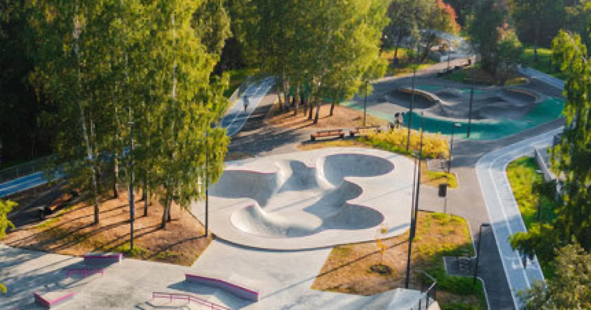
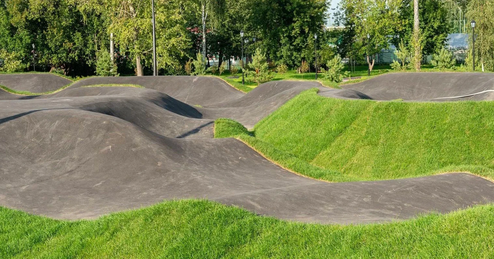
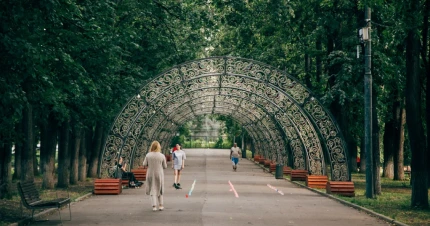
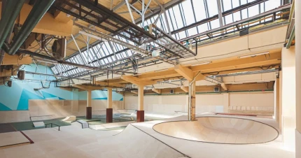

Локации

Скейт парк «ЦСКА»
Москва, ул. Ходынский бульвар, 8 м. ЦСКА
открытый
обучение

«Rampstroy house»»
Москва, ш. Энтузиастов, 31с36 м. Шоссе Энтузиастов
крытый
спорт-комплекс

Экстрим-кластер
Москва, 1-я Лукино ул., 1 м. Новопеределкино
окрытый

Памп-трек
Москва, ул. Большая Черкизовская, 23 м. Черкизовская
открытый
новички

«Красная Пресня»
Москва, ул. Мантулинская, д. 5с20 м. Деловой центр
эксперименты
парк

Bunny Hop
Москва, ул. Смольная дом 24 А м. Речной вокзал
крытый
Скейт парк «ЦСКА»
Москва, ул. Ходынский бульвар, 8 м. ЦСКА
открытый
обучение
«Rampstroy house»»
Москва, ш. Энтузиастов, 31с36 м. Шоссе Энтузиастов
крытый
спорт-комплекс
Экстрим-кластер
Москва, 1-я Лукино ул., 1 м. Новопеределкино
окрытый